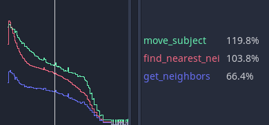
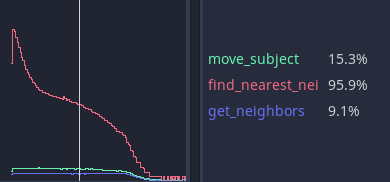

Profiler
Bạn chạy game từ Godot và chơi thử. Game vui, các tính năng đã gần hoàn thiện, và bạn cảm thấy sắp đến ngày phát hành.
Nhưng rồi, bạn mở cây kỹ năng và game gần như đứng hình vì có gì đó bị vướng trong code. Nhìn cây kỹ năng cuộn qua giật cục như trình chiếu slide là điều không thể chấp nhận. Có vấn đề gì vậy? Là do việc định vị các phần tử của cây kỹ năng, do UI, hay do kết xuất?
Bạn có thể thử tối ưu mọi thứ rồi chạy game lặp đi lặp lại, nhưng bạn có thể làm việc này thông minh hơn và thu hẹp các khả năng. Đó là lúc profiler của Godot xuất hiện.
Tổng quan về profiler
Bạn có thể mở profiler bằng cách mở bảng Debugger và nhấp vào tab Profiler.

Profiler của Godot không tự động chạy vì profiling tốn nhiều hiệu năng. Nó phải liên tục đo mọi thứ diễn ra trong game và báo cáo lại cho debugger, nên mặc định nó bị tắt.
Để bắt đầu profiling, hãy chạy game rồi quay lại trình chỉnh sửa. Nhấp vào nút Start ở góc trên bên trái tab Profiler. Bạn cũng có thể đánh dấu Autostart để profiler tự động bắt đầu khi dự án được chạy lần sau. Lưu ý rằng trạng thái của ô Autostart không được giữ lại giữa các phiên làm việc của trình chỉnh sửa.
Ghi chú
Profiler hiện chưa hỗ trợ script C#. Script C# có thể được profiling bằng JetBrains Rider và JetBrains dotTrace với plugin hỗ trợ Godot.
Bạn có thể xóa dữ liệu bất cứ lúc nào bằng cách nhấp nút Clear. Dùng menu thả xuống Measure để thay đổi loại dữ liệu cần đo. Bảng số đo và biểu đồ sẽ cập nhật tương ứng.
Dữ liệu được đo
Giao diện của profiler được chia làm hai. Bên trái là danh sách các hàm và bên phải là biểu đồ hiệu năng.
Các số đo chính là frame time, physics frame, idle time và physics time.
Frame time là thời gian Godot cần để thực thi toàn bộ logic cho một hình ảnh hoàn chỉnh, từ vật lý đến kết xuất.
Physics frame là thời gian Godot phân bổ giữa các lần cập nhật vật lý. Trong trường hợp lý tưởng, frame time là bất cứ giá trị nào bạn chọn: mặc định là 16,66 mili giây, tương ứng 60FPS. Đây là mốc tham chiếu bạn có thể dùng cho mọi thứ khác xung quanh.
Idle time là thời gian Godot dùng để cập nhật logic ngoài vật lý, chẳng hạn code nằm trong _process hoặc timer và camera được đặt cập nhật ở chế độ Idle.
Physics time là thời gian Godot dùng để cập nhật các tác vụ vật lý, như _physics_process và các node có sẵn được đặt cập nhật ở chế độ Physics.
Ghi chú
Frame Time bao gồm thời gian kết xuất. Giả sử bạn thấy game bị giật lag bất thường, nhưng vật lý và script đều chạy nhanh. Độ trễ có thể là do particle hoặc hiệu ứng hình ảnh xuất hiện!
Theo mặc định, Godot đánh dấu Frame Time và Physics Time. Điều này cho bạn cái nhìn tổng quan về thời gian mỗi frame mất so với FPS vật lý mong muốn đã phân bổ. Bạn có thể bật/tắt các hàm bằng cách nhấp vào các ô đánh dấu bên trái. Khi đi xuống danh sách sẽ xuất hiện các hạng mục khác, như Physics 2D, Physics và Audio, trước khi đến Script functions, nơi code của bạn xuất hiện.
Nếu nhấp vào biểu đồ, bạn sẽ thay đổi frame có thông tin hiển thị bên trái. Ở góc trên bên phải còn có bộ đếm frame, nơi bạn có thể điều chỉnh thủ công frame đang xem một cách chi tiết hơn.
Phạm vi đo và cửa sổ đo
Bạn có thể thay đổi số đo đang xem bằng menu thả xuống Measure. Theo mặc định, nó bắt đầu với Frame Time và liệt kê thời gian cần để đi qua frame tính bằng mili giây. Thời gian trung bình là thời gian trung bình mà một hàm bất kỳ mất khi được gọi nhiều lần. Ví dụ, một hàm mất 0,05 mili giây để chạy năm lần sẽ cho bạn giá trị trung bình là 0,01 mili giây.
Nếu số mili giây chính xác không quan trọng và bạn muốn xem tỷ lệ thời gian so với phần còn lại của frame, hãy dùng số đo phần trăm. Frame % tính tương đối theo Frame Time, còn Physics % tính tương đối theo Physics Time.
Tùy chọn cuối cùng là phạm vi thời gian. Inclusive đo thời gian một hàm chạy kèm theo mọi lời gọi hàm lồng bên trong. Ví dụ:

get_neighbors, find_nearest_neighbor và move_subject đều tốn nhiều thời gian. Bạn có thể bị đánh lừa rằng cả ba hàm này đều chậm.
Nhưng khi chuyển sang Self, Godot chỉ đo thời gian dành cho phần thân hàm mà không tính các lời gọi hàm mà chính nó thực hiện.

Bạn có thể thấy get_neighbors và move_subject đã giảm tầm quan trọng đáng kể. Thực tế, điều đó có nghĩa là get_neighbors và move_subject phần lớn thời gian là chờ các lời gọi hàm khác hoàn tất, còn find_nearest_neighbor mới thực sự chậm.
Gỡ lỗi mã chạy chậm bằng profiler
Tìm đoạn code chậm bằng profiler về cơ bản là chạy game và theo dõi biểu đồ hiệu năng khi nó được vẽ. Khi frame time xuất hiện một đột biến không chấp nhận được, bạn có thể nhấp vào biểu đồ để tạm dừng game và thu hẹp _Frame #_ về điểm bắt đầu của đột biến. Bạn có thể cần chuyển qua lại giữa các frame và các hàm để tìm ra nguyên nhân gốc.
Trong mục Script functions, bật checkbox của một số hàm để tìm ra hàm nào tốn thời gian. Đó là những hàm bạn cần xem xét và tối ưu.
Đo thủ công bằng micro giây
Nếu hàm của bạn phức tạp, việc xác định phần nào cần tối ưu có thể khá khó khăn. Đó là phần tính toán, hay cách bạn truy cập các dữ liệu khác để tính toán? Là vòng lặp for? Hay các câu lệnh if?
Bạn có thể thu hẹp phạm vi đo bằng cách tự đếm tick khi code chạy, dùng một vài hàm tạm thời. Hai hàm này thuộc đối tượng lớp Time, đó là get_ticks_msec và get_ticks_usec. Hàm thứ nhất đo bằng mili giây (1.000 mỗi giây), hàm thứ hai đo bằng micro giây (1.000.000 mỗi giây).
Cả hai đều trả về lượng thời gian kể từ khi game engine khởi động, theo đơn vị thời gian tương ứng.
Nếu bạn bao một đoạn code bằng số đếm micro giây lúc bắt đầu và lúc kết thúc, hiệu giữa hai giá trị chính là thời gian cần để chạy đoạn code đó.
# Measuring the time it takes for worker_function() to run
var start = Time.get_ticks_usec()
worker_function()
var end = Time.get_ticks_usec()
var worker_time = (end-start)/1000000.0
# Measuring the time spent running a calculation over each element of an array
start = Time.get_ticks_usec()
for calc in calculations:
result = pow(2, calc.power) * calc.product
end = Time.get_ticks_usec()
var loop_time = (end-start)/1000000.0
print("Worker time: %s\nLoop time: %s" % [worker_time, loop_time])
Khi bạn trở thành lập trình viên giàu kinh nghiệm hơn, kỹ thuật này sẽ ít cần thiết hơn. Bạn bắt đầu biết những phần nào của chương trình đang chạy là chậm. Việc biết rằng vòng lặp và rẽ nhánh có thể chậm đến từ kinh nghiệm, và bạn tích lũy kinh nghiệm bằng cách đo đạc và tìm hiểu.
Nhưng với profiler và các hàm tick, bạn đã có đủ công cụ để bắt đầu tìm ra những phần code cần tối ưu.